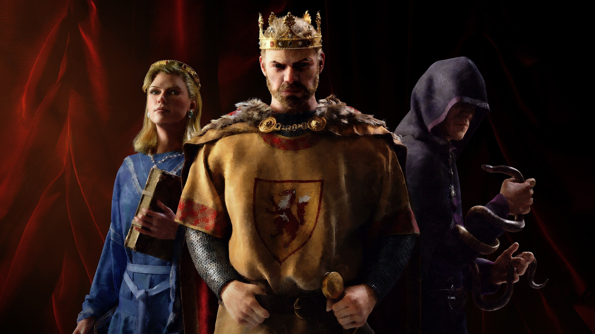

Sport
Hobby
Favoritspel


Jesper spelar alla typer av spel oavset om det är FPS, Strategi, RPG.
Trotts att han gillar en stor mängd fps shooters är det ett medieval - strategi/roleplay spel som är hans favorit.
Spelet heter crusader kings III och tillåter spelaren att spela som 100-tals historiska figurer samt skapa sin egna.